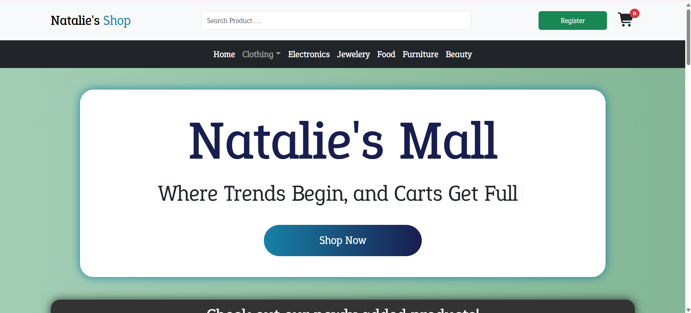
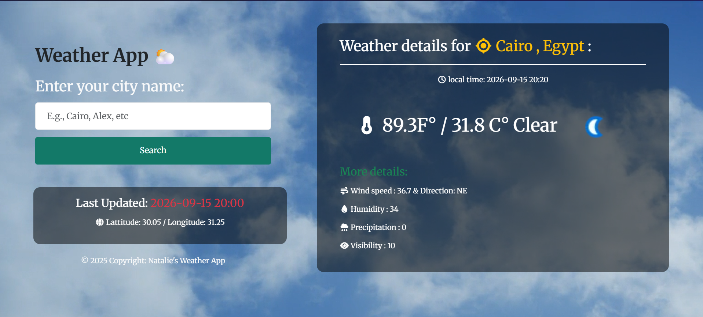
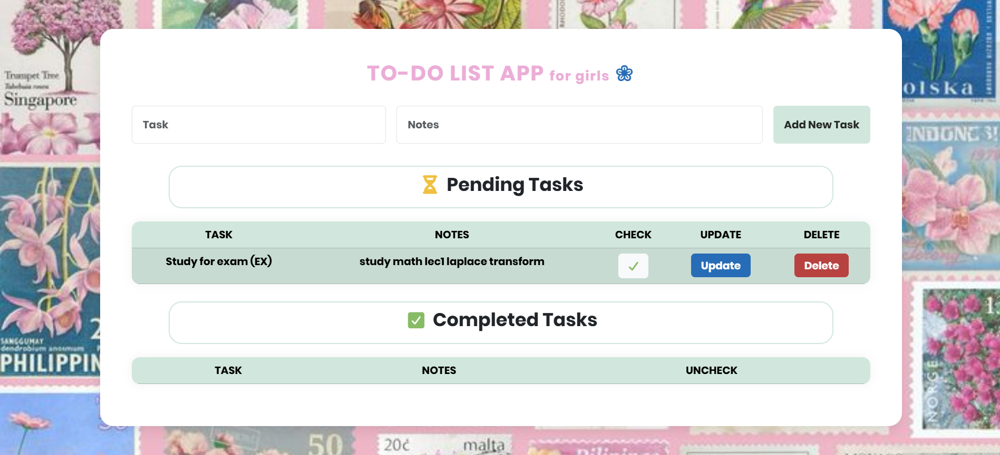
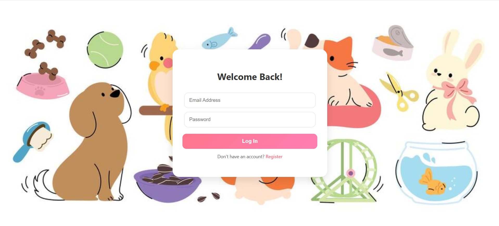
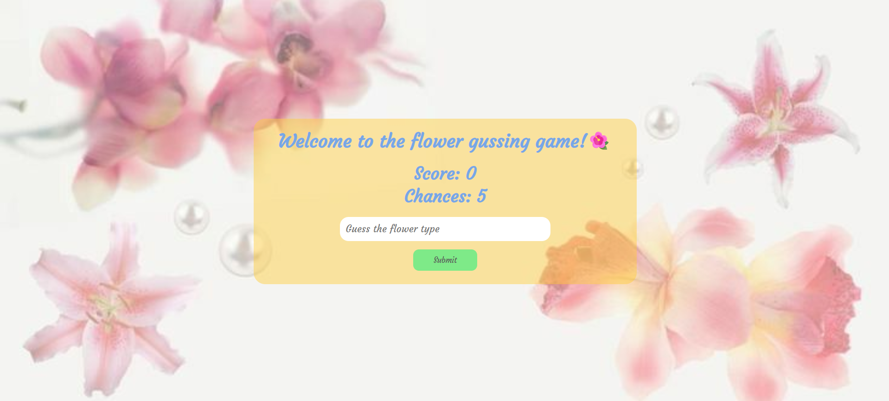
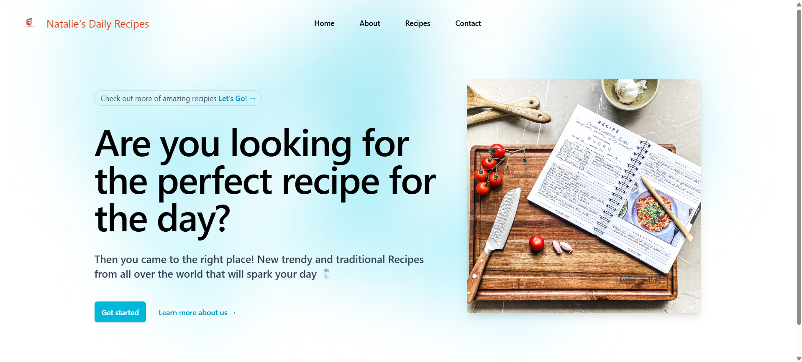
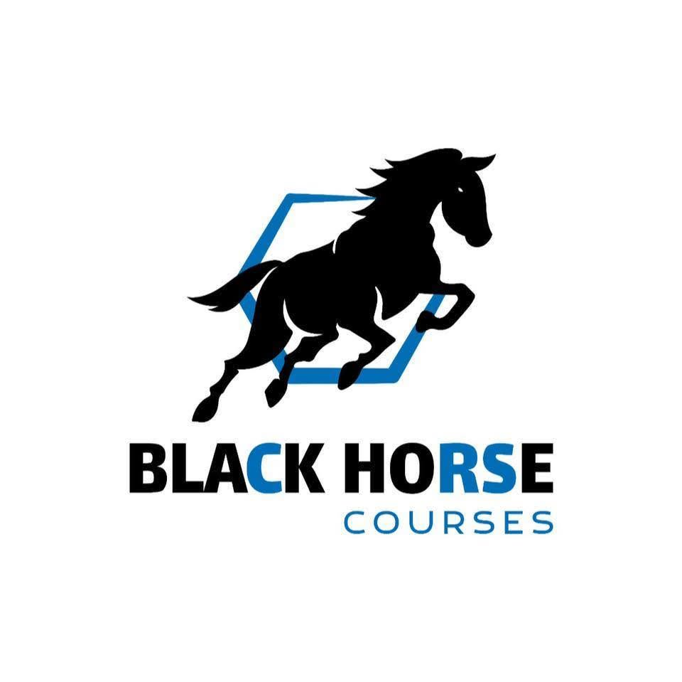
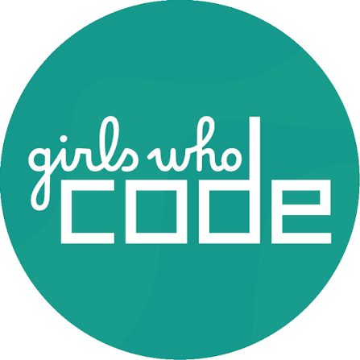

Programming & problem-solving
Applied C# and structured problem-solving to turn complex requirements into clear, efficient programs.
FULL STACK .NET WEB DEVELOPER
Full Stack .NET Web Developer
Creative thinking, thoughtful design, purposeful code.
Hi, I'm Natalie Bola — I build responsive, user-friendly web experiences where creativity meets technical problem-solving.
01 / GET TO KNOW ME
I believe a website should be more than a collection of pages. It should tell a story, reflect an identity, and make an impression.
For much of my life, I found it difficult to express myself through words, but I have found another language in design. I used to create designs and videos. Later, I started learning After Effects and paying attention to the small visual details that could make something feel “alive”. My interest in computers and the internet eventually led me to designing websites, especially platforms like Tumblr, where I could use HTML and CSS to personalize a blog. I noticed people around me who had products, ideas, and work they cared about, but did not always have a way to properly showcase them to the world, that made me pursue web development.
I present myself as a Full Stack .NET Web Developer with academic background in Computer Engineering and 1+ year experience in building web applications, equipped with strong foundation skills of SQL, C#, .NET Core Web API and MVC frameworks for back-end development, HTML5, JavaScript, and CSS3 and React framework for front-end development. I began my journey by developing 10+ projects during a 3-month front-end development course at Black Horse Academy. Eager to expand my knowledge, I then pursued back-end development through the 6-month Digital Egypt Pioneers Initiative (DEPI), where I worked on MediCare, a doctor appointment-booking website. Along the way, I also developed my soft skills, benefited from coaching and mentorship. In parallel, I started gaining hands-on freelancing experience by working with clients on real-world projects.
What makes me different is the way I combine creative thinking with technical problem solving. That means caring about how something looks, while also making sure it’s clear, responsive, functional, and user-friendly. I also bring a balance between commitment to deadlines, delivering what I promise and flexibility. I’m constantly working on working on growth and self-improvement.
02 / BUILDING MY FOUNDATION
Computer Engineering — New Mansoura University
Third-year student (2024–2029), majoring in Cloud Computing. Current CGPA: 3.765.
My studies strengthen the way I approach software: from logical problem-solving and algorithms to thinking about performance, memory, and scalable solutions.
Applied C# and structured problem-solving to turn complex requirements into clear, efficient programs.
Hands-on work including a Sudoku Solver, Automated Attendance System, Student Management System, and Smart Automatic Can Opener.
Building a foundation for my long-term goal of growing into cloud engineering.
03 / WHAT I WORK WITH
A growing toolkit for building useful, thoughtful digital experiences.
Languages, frameworks & libraries
My everyday workflow and visual toolkit
04 / SELECTED WORK
A selection of projects where I’ve practiced turning ideas into interactive, responsive websites and applications.

SHOP / 01A responsive React e-commerce experience with login, product browsing, categories, product details, cart, checkout, and external product data.

WEATHER / 02A React weather app that uses WeatherAPI to show current conditions for searched locations through a simple interface.

PRODUCTIVITY / 03A task manager with create, update, and delete functionality, Redux state management, and separate routes for task views.

COMMUNITY / 04A responsive adoption website with registration, login validation, password requirements, and information about available animals.

GAME / 05An interactive guessing game with score tracking, limited chances, instant feedback, and sound effects for correct and incorrect answers.

RECIPES / 06A responsive React recipe website featuring daily recipe content, browsing, and a clean interface for discovering meals and cooking ideas.
More projects and experiments are always in progress.
05 / LEARNING IN MOTION
Building a strong foundation, one project and one new concept at a time.
FULL STACK .NET
Full Stack .NET Web Trainee
The Digital Egypt Pioneers Initiative (DEPI) is a national initiative launched by Egypt’s Ministry of Communications and Information Technology (MCIT) to develop digital skills, empower young talent, and prepare participants for careers in the rapidly evolving technology sector. Throughout my training I gained a strong foundation in SQL, C#, .NET Core Web API and MVC frameworks for back-end development, HTML5, JavaScript, and CSS3 for front-end development. Developed as a team project MediCare: website for doctor appointment booking

BHFRONT-END DEVELOPMENT
Front-End Web Developer Trainee
Black Horse Courses is a technical and professional training provider in Egypt that offers courses aimed at developing practical knowledge and professional competencies across different fields. Throughout my training I developed 10+ project websites. it helped me understand how front-end development brings design to life. I explored HTML and CSS, built responsive layouts using Bootstrap and Flexbox, JavaScript, React.js.

GWCGAME DEVELOPMENT · SUMMER IMMERSION
Summer Immersion Program — Game Design Track
Girls Who Code is an international nonprofit organization dedicated to closing the gender gap in technology and empowering young women to pursue careers in computer science. Through its Summer Immersion Program (SIP), the organization provides virtual learning experiences combining coding education, mentorship, and hands-on projects.
I participated in the Game Design track, using p5.js, a JavaScript library for creative coding, to explore programming, game development, and fundamental UX design principles through interactive projects. I coded a game promoting environmental preservation, earned three certificates for completing skill-based games, and received a certificate of completion.
My training experiences focus on hands-on projects and building practical skills. Certificate images can be added here when available.
Always learning. I’m committed to growth, improving my craft, and staying curious about better ways to build.
06 / HOW I CAN HELP
A mix of technical skills and visual creativity to help bring digital ideas to life.

I build responsive websites and web applications, connecting clean interfaces with functional backend logic using React, C#, .NET, SQL, HTML, CSS, and JavaScript.
Thoughtful · Functional · Responsive
I help improve existing websites through small fixes, content updates, layout adjustments, and feature improvements that make the experience smoother.
Reliable · Clear · Up to date
I create visual designs and motion graphics, from eye-catching graphics and creative compositions to animated elements and short video visuals, using tools like Adobe Photoshop and After Effects.
Graphic Design · Motion · Visual Storytelling
I prepare organized Word documents, engaging PowerPoint presentations, and clear Excel spreadsheets for academic and professional use.
Organized · Polished · Practical07 / KIND WORDS
This space is reserved for feedback from people I work and learn with.
08 / YOUR IDEA, NEXT
Have a project in mind, an opportunity to share, or just want to connect? I’d love to hear from you.
natalybolaf2006@gmail.com ↗